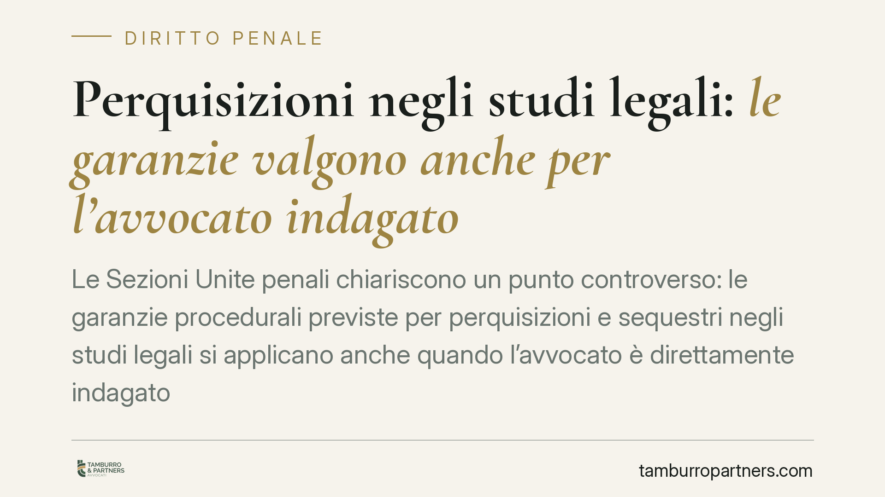

Perquisizioni negli studi legali: le garanzie valgono anche per l'avvocato indagato
Le Sezioni Unite penali chiariscono un punto controverso: le garanzie procedurali previste per perquisizioni e sequestri negli studi legali si applicano anche quando l'avvocato è direttamente indagato. In assenza dell'avviso al Consiglio dell'Ordine, la ricerca della prova è viziata. Una decisione che incide sui rapporti tra difesa, riservatezza professionale e potere investigativo dello Stato.

Il contesto
Le perquisizioni negli studi legali toccano un nervo delicato del processo penale: da un lato l'interesse dello Stato a raccogliere prove, dall'altro la tutela del rapporto fiduciario tra difensore e assistito. L'art. 103 del codice di procedura penale (c.p.p.) predispone una serie di cautele proprio per proteggere questo equilibrio.
La questione irrisolta era la seguente: quelle garanzie restano ferme anche quando l'avvocato non è terzo estraneo, ma indagato in prima persona? Su questo le Sezioni Unite della Corte di Cassazione hanno preso posizione, componendo un contrasto che generava incertezza nella prassi investigativa.
Inquadramento normativo
L'art. 103 c.p.p. disciplina le garanzie di libertà del difensore. In particolare, prevede che ispezioni, perquisizioni e sequestri negli studi dei difensori possano essere disposti solo in casi tassativi e con l'osservanza di specifiche formalità. Tra queste, l'obbligo di dare avviso al Consiglio dell'Ordine forense affinché il presidente, o un suo delegato, possa assistere alle operazioni.
Questo avviso non è un adempimento burocratico. Serve a garantire un controllo esterno e imparziale sull'attività della polizia giudiziaria e del pubblico ministero, evitando che nella ricerca della prova si comprometta materiale coperto dal segreto professionale e, con esso, il diritto di difesa tutelato dall'art. 24 della Costituzione.
Il nodo interpretativo nasceva dalla lettera della norma, pensata anzitutto per l'avvocato-difensore. Da qui la tesi restrittiva: se l'avvocato è indagato, non agisce come difensore, dunque le tutele non opererebbero. Le Sezioni Unite hanno respinto questa lettura.
La decisione delle Sezioni Unite
La Corte ha affermato che le garanzie dell'art. 103 c.p.p. si applicano anche quando l'avvocato è direttamente indagato. La ragione è sostanziale: la tutela non protegge la persona del professionista in quanto tale, ma il patrimonio informativo custodito nello studio, che appartiene anche ai suoi assistiti estranei alle indagini.
Nello studio di un legale indagato per un fatto specifico si trovano fascicoli, corrispondenza e documenti relativi a decine di altri clienti. Consentire una perquisizione senza le cautele di legge esporrebbe queste posizioni a un'ingerenza non giustificata dall'indagine in corso.
Da qui la conseguenza processuale più rilevante: il mancato avviso al Consiglio dell'Ordine invalida la procedura di ricerca della prova. Gli elementi acquisiti in violazione delle garanzie non possono essere utilizzati.
Implicazioni pratiche
Per gli avvocati la pronuncia rafforza una tutela che non viene meno per il solo fatto di essere sottoposti a indagine. Chi subisce una perquisizione dello studio ha diritto a che sia stato dato avviso all'Ordine e a che le operazioni si svolgano nel rispetto delle formalità di legge.
Per la polizia giudiziaria e il pubblico ministero il messaggio è netto: l'inquadramento dell'avvocato come indagato non consente scorciatoie procedurali. L'omissione dell'avviso non è una mera irregolarità sanabile, ma incide sulla utilizzabilità del materiale raccolto.
Per i clienti dell'avvocato indagato la decisione offre una protezione indiretta ma concreta: i loro documenti restano coperti dalle garanzie di legge anche quando l'attenzione investigativa si concentra sul professionista.
Cosa fare in concreto
- Verificate l'avviso all'Ordine. In caso di perquisizione dello studio, accertate immediatamente se il Consiglio dell'Ordine sia stato avvisato e se sia presente il presidente o un delegato.
- Documentate le operazioni. Annotate orari, soggetti presenti, ambiti perquisiti e materiale sequestrato; ogni scostamento dalle formalità dell'art. 103 c.p.p. va messo a verbale.
- Segnalate subito le violazioni. Eccepite in tempo utile l'eventuale omissione dell'avviso, poiché incide sull'utilizzabilità della prova.
- Distinguete la posizione dei terzi. Evidenziate la presenza di documenti riferiti a clienti estranei all'indagine, la cui riservatezza gode di tutela autonoma.
- Coordinatevi con un difensore. Anche l'avvocato indagato ha diritto all'assistenza tecnica: consigliamo di attivarla senza ritardo per presidiare la regolarità delle operazioni.
Un principio di equilibrio
La decisione non crea una zona franca per i professionisti indagati. Ribadisce, piuttosto, che il segreto professionale e il diritto di difesa sono valori che vanno protetti anche quando toccano chi indossa la toga. È l'interesse del cliente, prima ancora che quello dell'avvocato, a essere tutelato.
Contributo informativo a cura di Tamburro & Partners - Avv. Giuseppe Tamburro. Non costituisce parere legale.
Ogni condominio ha una storia a sé.
Se gestisci un'amministrazione e vuoi un confronto su una specifica questione condominiale, scrivi allo studio. Ti rispondiamo entro un giorno lavorativo.